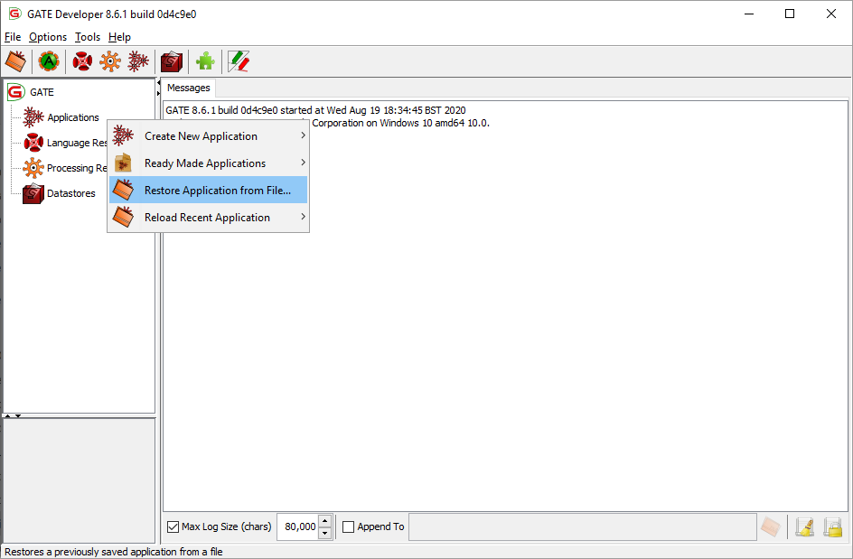
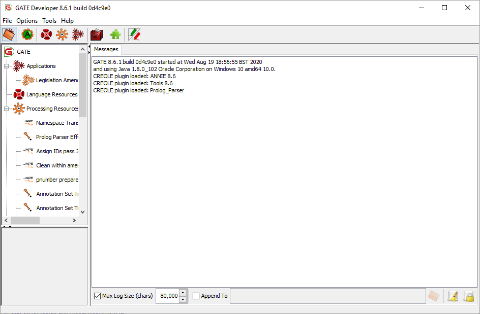
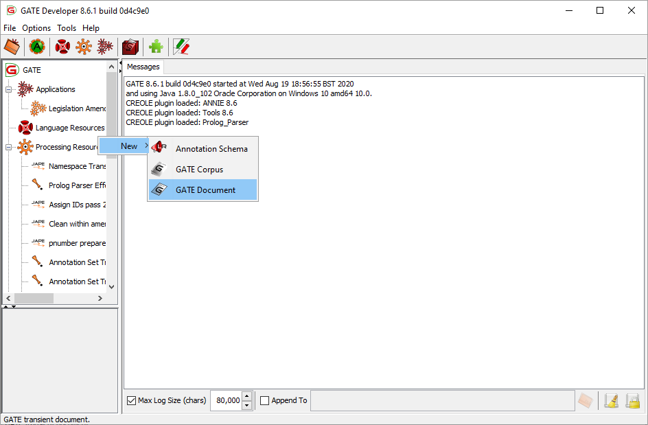
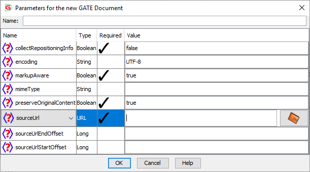
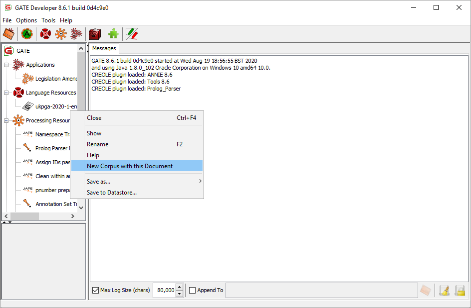
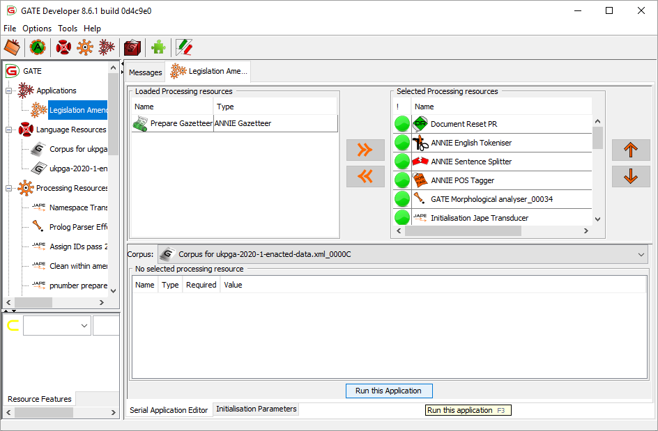
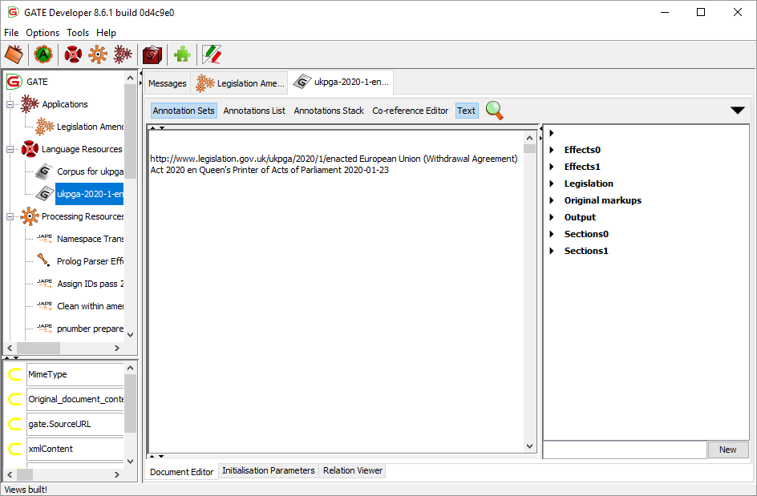
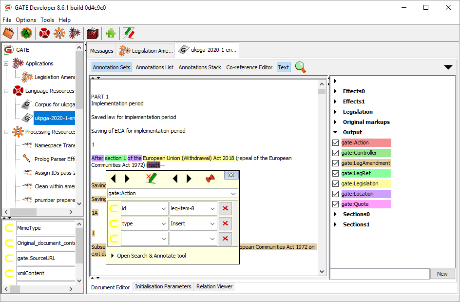
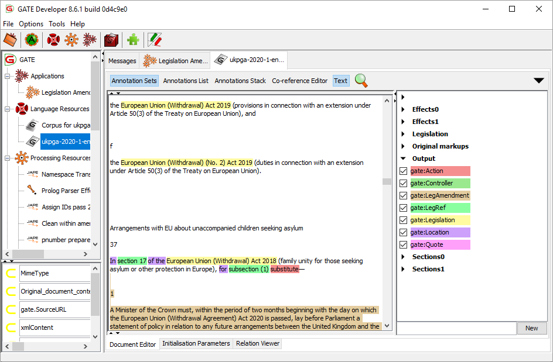

This package is a text processing pipeline that uses the GATE natural language processing framework to parse UK legislation and identify where the text of that legislation makes amendments to other items of legislation.
The Legislation Services team at The National Archives (who are responsible for publishing both original and revised UK legislation) use this pipeline to automatically identify changes to existing legislation that occur as part of new legislation, complementing the work of human editors.
The pipeline comprises a sequence of text processing steps. These steps use legislation-specific gazetteers, JAPE rules and plug-ins implemented in Java code, including a bespoke parser. The outputs of the pipeline are an annotated version of the XML of the input legislation document, plus an XML representation of the amendments made by the document to other items of legislation.
The National Archives run this pipeline within a purpose-built Data Enrichment Service (DES). However, it can also be run separately within the GATE Developer environment (ideal for experimentation) or called from other Java code. This document gives a simple introduction to the pipeline by running it in the GATE developer environment.
legislation-amendments.gapp) uses the new format. If you are using GATE 8.2–8.4, make sure to use the legislation-amendments-pre-gate-8.5.gapp application file instead.Download and extract the Legislation Amendments GATE package.
(installation dir)/
LegislationAmendments/
doc/
(documentation here)
embedded/
(sample Java app that embeds the pipeline using GATE Embedded)
gate-resources/
(bespoke plugins here)
java-lib/
(Required Java EE libraries that are missing in newer JDKs)
plugins/
(GATE bundled plugins here)
LegislationAmendments/
legislation-amendments.gapp
gazetteer/
(legislation gazetteers here)
NE/
(JAPE rules here)
legislation-amendments.gapp file to point towards the correct location:
LegislationAmendments/LegislationAmendments/legislation-amendments.gapp.$relpath$ with file://///server/share/path/to/LegislationAmendments/LegislationAmendments/, where //server/share/path/to/ is the path to the folder in the network location where you have extracted the package (e.g. if you extracted the package into a folder called work/gate/ underneath the share \\filesrv\homedir$, replace $relpath$ with file://///filesrv/homedir$/work/gate/LegislationAmendments/LegislationAmendments/)Download and install GATE. We recommend installing GATE 8.6.1 or newer.
C:\Program Files (x86)\GATE_Developer_8.x.x where x.x is the version number you installed; on macOS/Linux/UNIX, the location will vary)
gate.l4j.ini in a text editor and add on a new line the text -Xmx2G. (If you have more than 4GB of RAM, increase the 2 to half of the RAM available in your system.) This will allow GATE to use more RAM, which will mean that it will both run faster and run out of memory less often.java.lang.NoClassDefFoundError errors in the Messages pane of GATE if these libraries are missing. To avoid this, we recommend that you copy the files from the java-lib directory of this package to the lib directory in your GATE installation directory.Download and install SWI-Prolog.
C:/Program Files/swipl/bin/swipl.exe (on Windows) or /usr/bin/swipl (on macOS/Linux/UNIX). If you have installed SWI-Prolog elsewhere, you will need to change the path in the Prolog Parser component's creole.xml file.LegislationAmendments/gate-resources/Prolog_Parser/creole.xml with a text editor and add the path to the SWI-Prolog interpreter in the DEFAULT attribute of the swiPrologExecutable parameter:<!-- change "C:/path/to/swipl/bin/swipl.exe" to the SWI-Prolog path on your system -->
<PARAMETER
NAME="swiPrologExecutable"
COMMENT="The location of the SWI-Prolog executable"
OPTIONAL="true"
DEFAULT="C:/path/to/swipl/bin/swipl.exe"
RUNTIME="false">java.lang.String</PARAMETER>
You should now be ready to run the application in the GATE developer environment.
If you wish to experiment with the pipeline and inspect the intermediate results, it is best to run it in the GATE development environment. This environment provides an interactive graphical interface. In the following section, we will walk through an example of running a single document through the pipeline in the GATE Developer environment.
For further information about GATE, please refer to the GATE website at
https://gate.ac.uk/.
Load the pipeline.
Right click on Applications 🡆 Restore Application from File. The GATE application is specified in the file LegislationAmendments/LegislationAmendments/legislation-amendments.gapp. (Remember that for versions of GATE older than 8.5, you must instead use the application file LegislationAmendments/LegislationAmendments/legislation-amendments-pre-gate-8.5.gapp)

It should now look like this:

Load a document.
This is done by right-clicking on the Language Resources and selecting New 🡆 GATE Document.

An XML legislation document can be selected by choosing sourceURL in the dialog box. Make sure to choose the correct settings as listed below to ensure GATE parses the document correctly:

Add the document to a corpus.
The pipeline runs on a corpus of documents (even when processing a single document), so it's necessary to create a corpus to contain this document. This is done by right-clicking on the document, and selecting New Corpus with this Document.

Run the pipeline.
To do this, double-click the name of the pipeline Legislation Amendments. This presents a view of the pipeline steps (“processing resources”). Make sure that the correct corpus is selected, and click Run this Application.

Examine the results.
The results can be examined by double-clicking on the document, and then clicking Annotation Sets in the top left corner of the Document Editor. This brings up the coloured list of annotations on the right of the window.

It can be seen that there are various annotation sets:
To show annotations in the document, click on the checkbox next to specific annotation types. To see additional information (features) relating to a specific annotation, place the cursor on the coloured text and press Ctrl-e.

The annotations in the Output annotation set are the ones output into the final marked-up XML.

The pipeline creates a large number of annotations on the document as it runs. The way that the Editorial system uses the pipeline is that:
The pipeline configures GATE to add a certain subset of the annotations from the Output annotation set into the document when GATE re-exports it as XML. The exported annotations are:
The pipeline stores additional information in GATE “features” associated with the processed document. The feature named xmlContent contains the “Effects” XML, which describes the amendments to other legislation contained in the text of the document. The Editorial system uses this XML to generate the “tables of effects” (TOES) that editors will use as a guide to produce revised versions of affected documents.
xmlContent feature in the “Resource Features” pane in the far bottom left of the window, then scrolling right to see the content. You can copy and paste this XML into a text editor for ease of reading or re-use.The Editorial system applies XSLT transforms to the output document to generate an annotated PDF and HTML file and a TOES spreadsheet.
To export the marked-up document with the annotations in the list above from within the GATE Developer environment:
You can use the GATE Embedded library to build a Java application or library that embeds a GATE pipeline. A simple example program that uses GATE Embedded to embed the Legislation Amendments application is available in the LegislationAmendments/embedded/ directory.